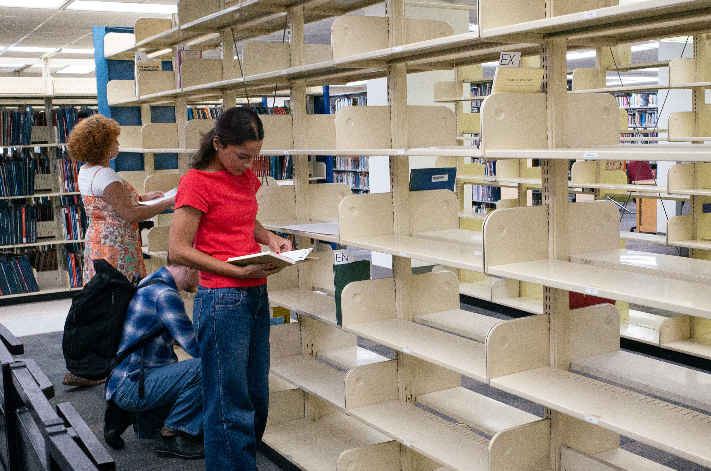
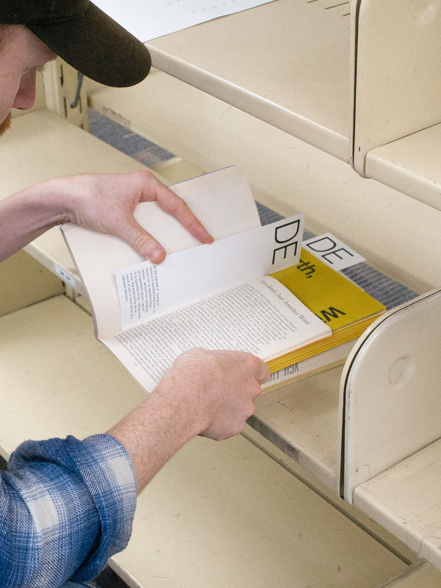
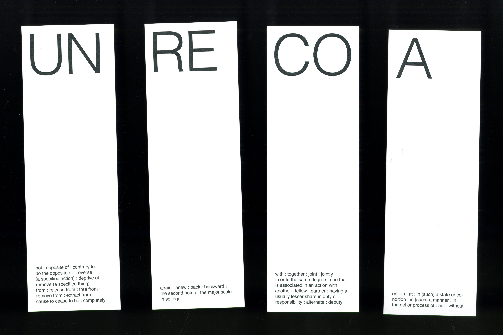
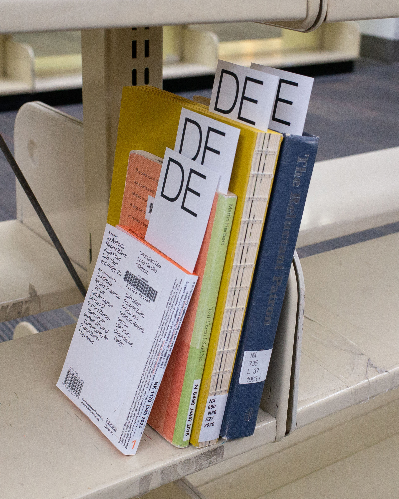
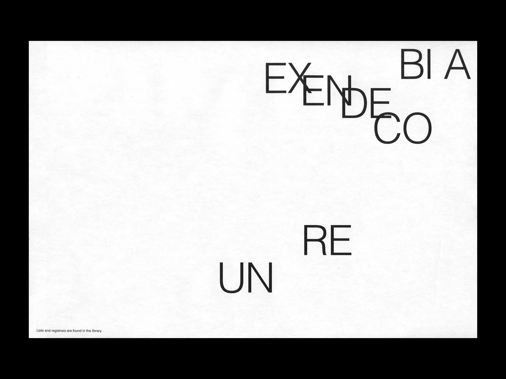
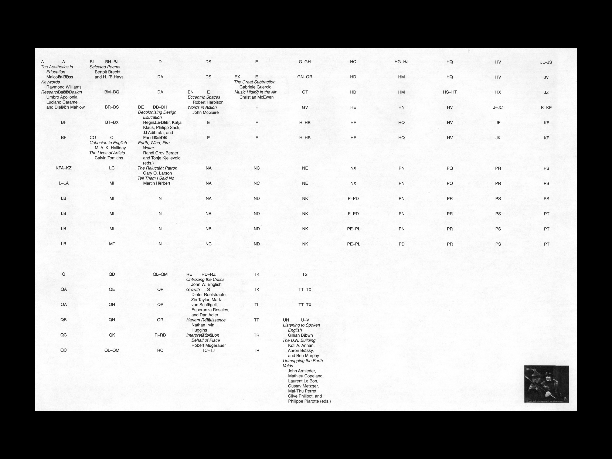
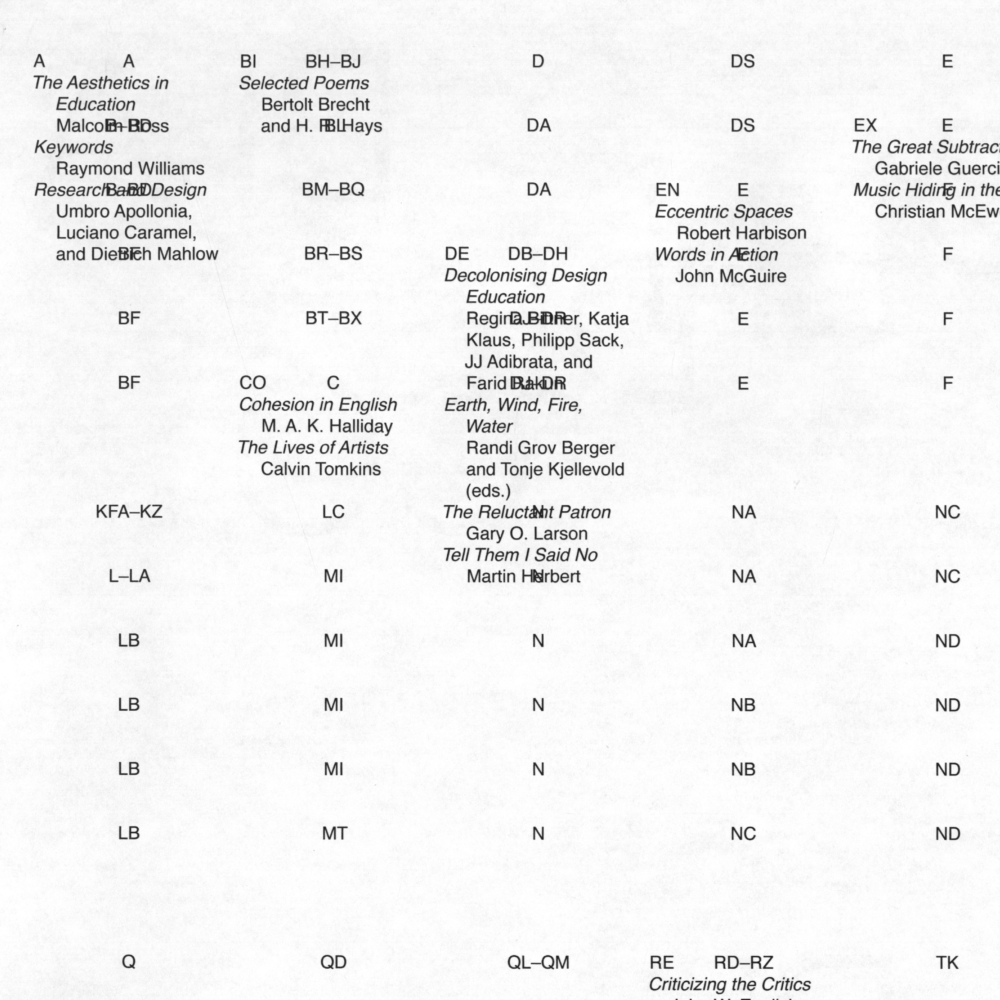
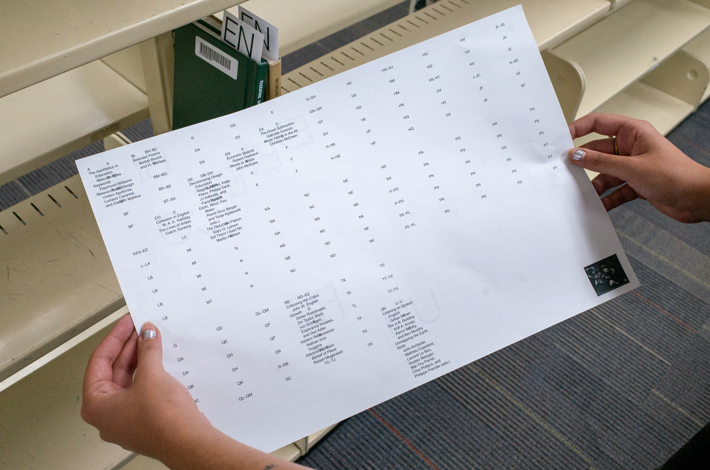

A-Bi-Co-De-En-Ex-Re-Un-Listing the Library
An experiment in overlaying new structures and systems upon existing ones which took place at the VCU Cabell Library. I created a criteria for selecting a collection of books based on a set of two letter prefixes. The reasoning for how books fit within the criteria ranged from play on words to subjective associations. The collection was placed in the reshelving section in correspondence to their prefix, rather than their correct, library designated codes. The project seeks to ask, how can we replace rigid existing systems with ones that make room for looser, more accommodating ones that allow for exploration and seeing new relations between information and space?
Typeface
Helvetica
Year
2026